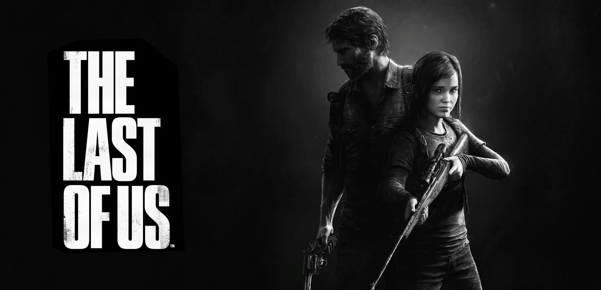

Um mundo destruído... uma história inesquecível
The Last of Us é uma das histórias mais marcantes dos videogames, combinando sobrevivência, emoção e relações humanas em um mundo devastado por uma infecção.
Explore o universo
História
Descubra como o mundo entrou em colapso e a jornada de Joel e Ellie.
Personagens
Conheça os personagens que tornam essa história tão especial.
Infectados
Veja os diferentes tipos de ameaças que dominam esse mundo.
Curiosidades
Fatos interessantes sobre o jogo e a série.